We enrol all year round, subject to available places.
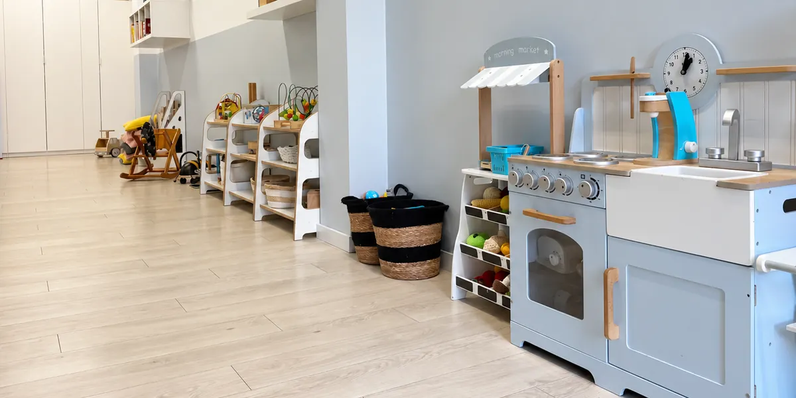
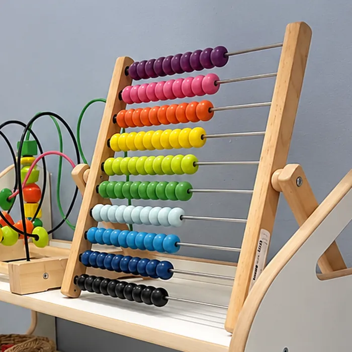
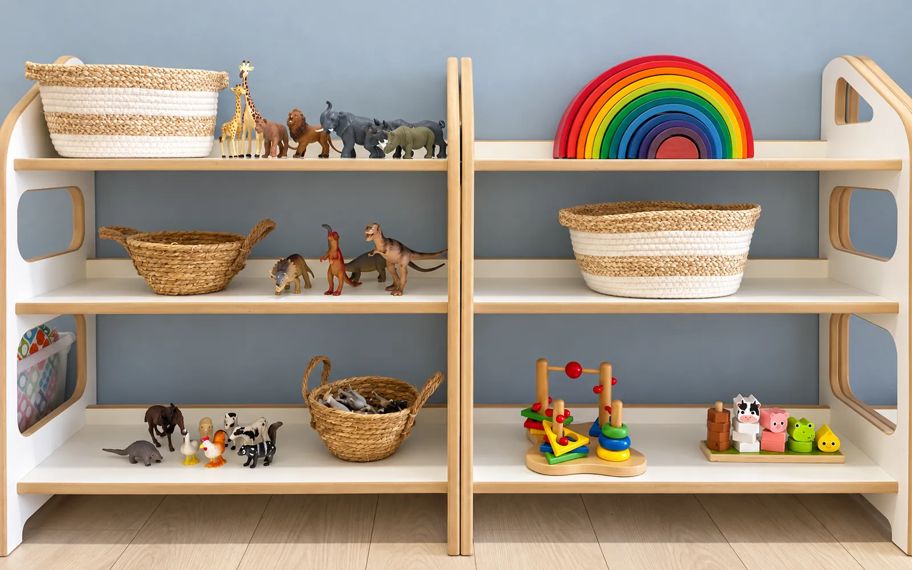
up to 20children in the nursery
all yearenrolment open
7:00–17:00opening hours
up to 1500 zła month from „Aktywnie w żłobku”
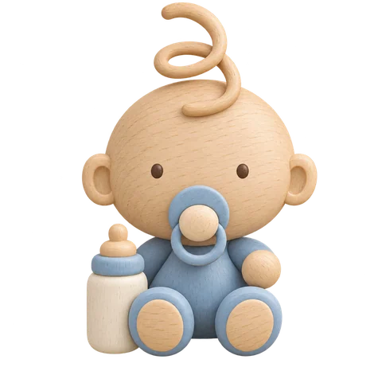
About us · Bonjour means good morning
Relationship first. Everything else follows.
Bonjour Bébé is a small nursery, run since 2013 by its founder, an early-years and special-needs educator. We created a place where every child has time, an attentive adult nearby and room to discover the world in their own way.
Our values
Relationship before curriculum
Feeling safe comes first, learning follows. A child who feels secure reaches for new challenges on their own.
Respect for pace and boundaries
No punishments or rewards, in the spirit of Nonviolent Communication. We name emotions and stay with children through them.
Curiosity through the senses
Inspired by Montessori and Reggio Emilia: natural materials, low shelves and time to try things alone. We read aloud a lot.
Partnership with parents
Settling in with a parent in the room, a daily chat at pick-up, and all documents to read before you decide.
What makes us different
Small group, close bonds
A small group, attentive care and a warm, close atmosphere help children build relationships based on trust, with their caregivers and with each other. We make sure you always know who spends the day with your child.
Experience since 2013
The nursery is run on site by its founder, a qualified early-years educator and special-needs educator.
Specialist support
A psychologist, a speech therapist and a physiotherapist support our team. We notice early what a child needs and guide parents on next steps.
Settling in, Berlin model
A parent stays with the child in the room, and the child, not the calendar, sets how long settling in takes.
Healthy meals, nothing processed
According to our caterer, Zdrowy Maluch, meals are cooked from scratch, with limited sugar and home-grown vegetables in season.
Two kinds of help with fees
A City of Wrocław subsidy on every place (400 zł a month) and the „Aktywnie w żłobku” benefit. We help you through the paperwork.
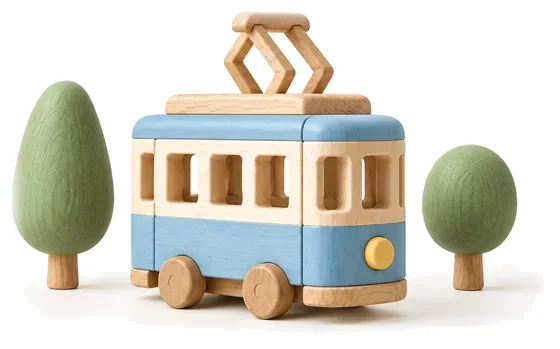
Living or working in the city centre? We are at Dąbrowskiego 32/1U, a few minutes from Wrocław Główny station.
Our everyday rhythm
A familiar rhythm. A calmer day.
Our daily plan gives the day its shape. We adjust it flexibly, because every child has their own rhythm of sleep, meals and play.
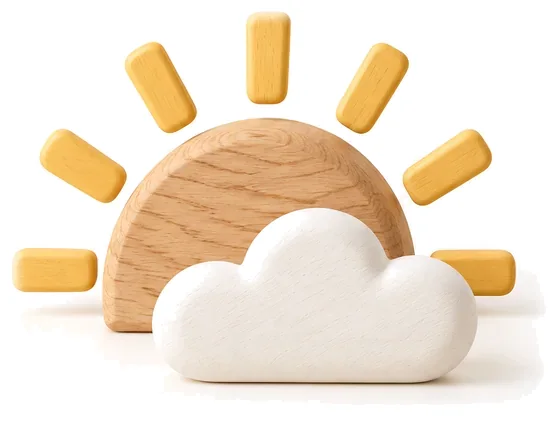
Right now at the nursery
Morning
Nursery opens
Music play
Breakfast
Learning activities from the monthly plan
Walk or playground
Midday
Soup
Nap
Main course
Afternoon
Free play
Afternoon snack
Reading books together
Goodbyes and chats with parents
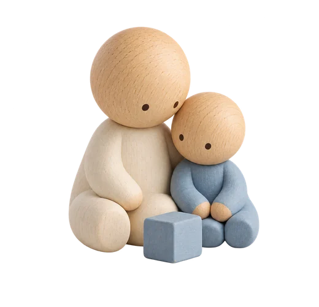
A start at your own pace
Settling in with a parent, step by step.
We follow the Berlin settling-in model. We don’t promise a fixed number of days: each next step follows your child’s signals.
1
Getting to know you
We talk about your family’s routines, habits and your child’s needs.
2
Parent in the room
Your child explores the new place with you nearby, while a caregiver gently builds a bond.
3
A first short goodbye
When we see your child is ready, we try a short separation, watch how it goes and talk it through with you.
4
A longer day
We extend the time step by step. What matters is how your child feels.
Play matters
Activities that leave room for curiosity.
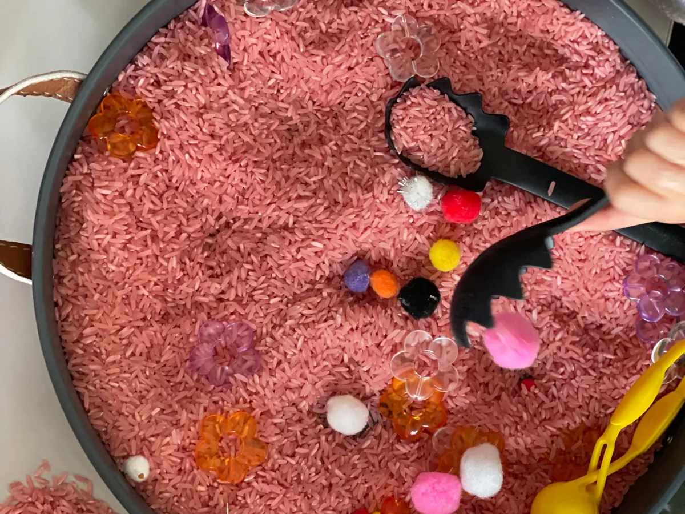
Senses and making
Sensoplastyka®
Textures, colours and freedom to experiment.
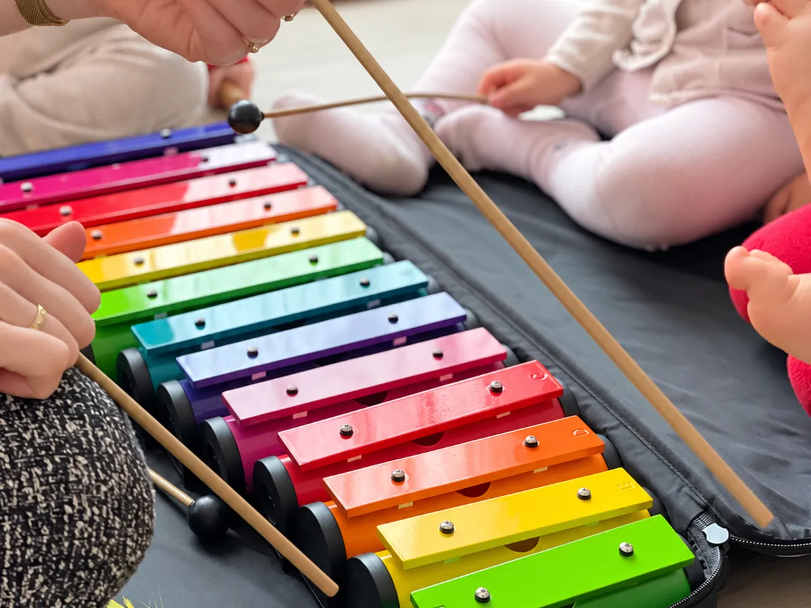
Music and movement
Music Care and Gordon concerts
Discovering music through sound, rhythm, singing and movement.
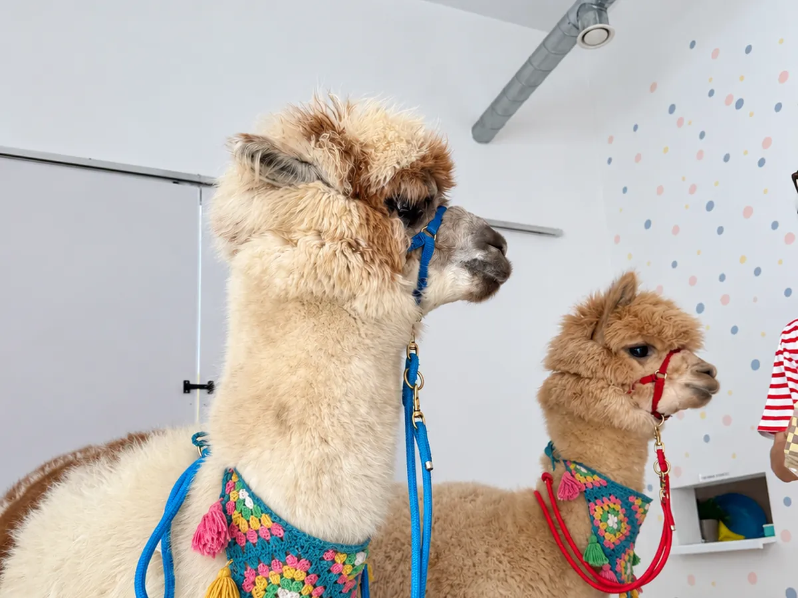
Animals and nature
Meeting animals
Close encounters, discovering nature and building empathy.
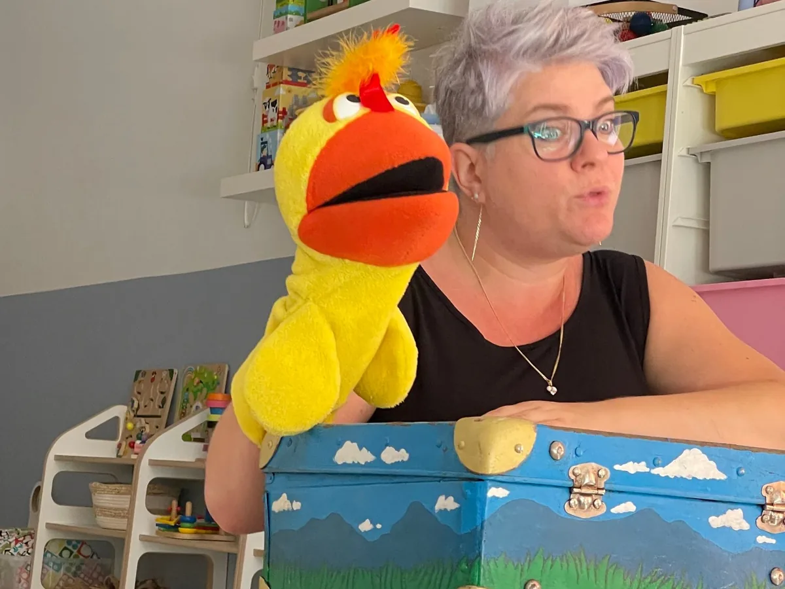
Words and imagination
Puppet theatre, musical tales and English
Stories, puppet shows, music and playing with language.
✓Extra activities come as one package that covers every session. No charges for individual sessions and no separate sign-ups.
Make yourselves at home
White walls, wood and childhood curiosity.
Two high, spacious rooms, low shelves and books within reach. We avoid loud interiors and baby talk, and leave room for rest, ideas and everyday discoveries.
People make the place
Close to the child. In touch with parents.
We choose our team for their approach to children, their teaching skills and their sensitivity to children’s needs. We keep developing our skills through training in, among other things, supporting child development and first aid.
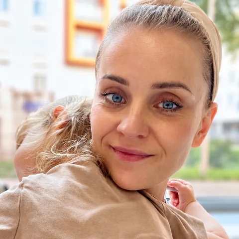
“I wanted to create a place that gives children and their parents peace of mind and the assurance of reliable care.”
Anna Frach-Popielarskafounder and director · early-years educator and special-needs educator
What parents ask about
What your child eats, and how we keep them safe.
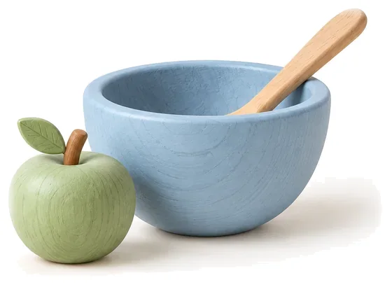
Food
Meals are prepared by Zdrowy Maluch, a caterer cooking for nurseries and preschools.
Free-range eggs and, in season, vegetables grown on their own farm near Wrocław
Meals cooked from scratch, without processed products
Home-made baking with limited sugar
Before you enrol, we send the menu and discuss allergies and diets
Safety
The nursery is officially registered and supervised by the Wrocław City Council health and social affairs department.
Certified furniture, toys and paints
Positive inspections from the fire service and Sanepid (health inspectorate)
Regular paediatric and infant first-aid training
Matching high-visibility scarves on walks
Support for your family
Fees and funding.
We tailor care to your needs, so we discuss costs individually. Two kinds of support can lower your monthly fee.
up to 1500 zł / month
„Aktywnie w żłobku”
A benefit from the government’s Aktywny Rodzic programme, paid by ZUS. It reduces the nursery fee; for children with a disability certificate it can reach 1900 zł. It does not cover meals.